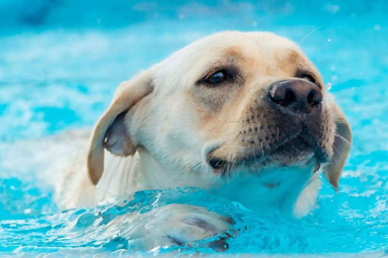

Swimming is an individual or team racing sport that requires the use of the entire body to move through water. Competitive swimming is one of the most popular Olympic sports, with varied events in backstroke, freestyle, and individual medley. In addition to these individual events, four swimmers can take part in either a freestyle or medley relay. A medley relay consists of four swimmers who will each swim a different stroke, ordered as backstroke, breaststroke, butterfly and freestyle.
